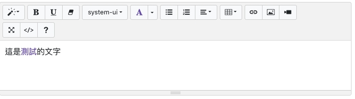

線上版的編輯器 Summernote
什麼是 Summernote ?
通常在做多行輸入的時候我們都會使用 <textarea></textarea> ，但是他只能做到單純輸入文字，沒辦法做到可以輸入字型、顏色等等，我們今天介紹的這套件就跟簡單版的 word 一樣可以選擇字型、顏色、大小等等

套件安裝
在 header 引入 Summernote 的 CSS ，他有使用到 bootstrap ，所以也需要引入 bootstrap.min.css
1 | <link rel="stylesheet" href="https://stackpath.bootstrapcdn.com/bootstrap/4.4.1/css/bootstrap.min.css" integrity="sha384-Vkoo8x4CGsO3+Hhxv8T/Q5PaXtkKtu6ug5TOeNV6gBiFeWPGFN9MuhOf23Q9Ifjh" crossorigin="anonymous"> |
在 footer 引入 js，這個套件需要 jQuery ，所以在引入前需要先引入 jQuery
1 | <script src="https://code.jquery.com/jquery-3.5.1.min.js" crossorigin="anonymous"></script> |
這樣就完成安裝
開始使用
步驟一 新增 Summernote 的 div
1 | <div id="summernote"></div> |
步驟二 設定js
1 | <script> |
這樣就會出現預設最原始編輯器的畫面，我們下面可以透過修改不同的參數達到更多的功能
進階設定
1 | <script> |
以上就是這 Summernote 的介紹啦~ 他功能真的太多啦沒辦法一一的介紹，留給讀者慢慢的摸索囉